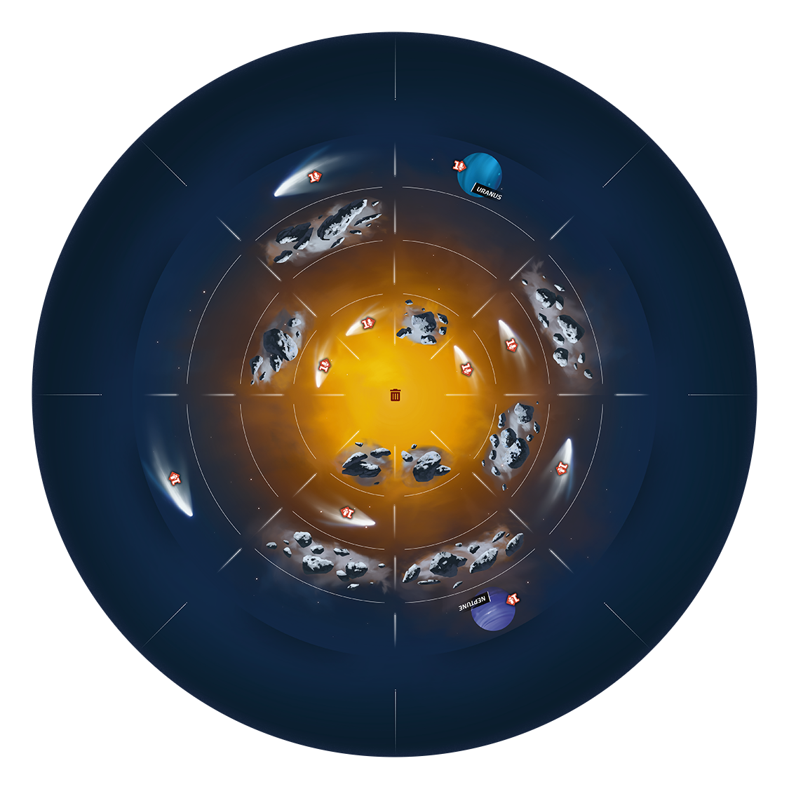
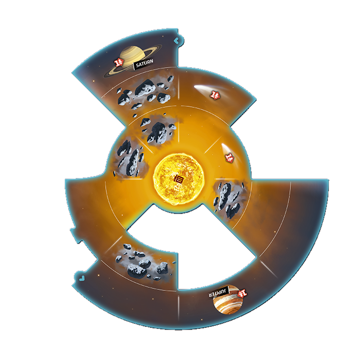
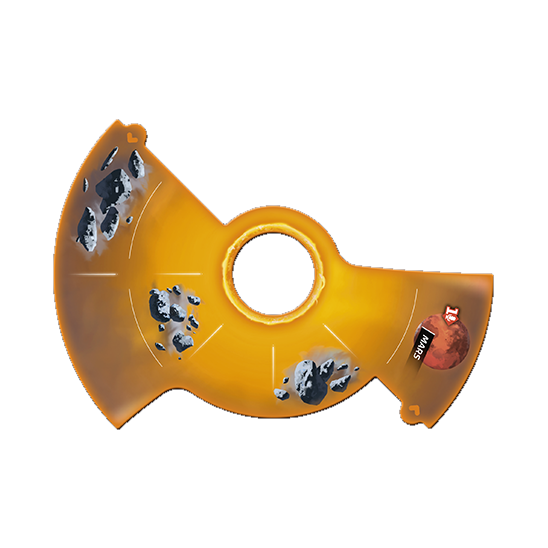
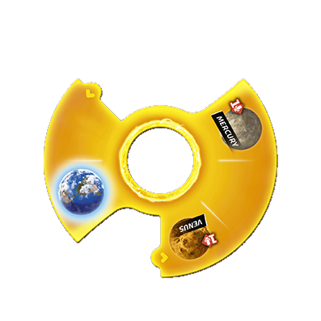
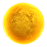

태양계
SETI층을 선택해 시계 또는 반시계 방향으로 45°씩 회전하세요.





1층휠 1 회전
2층휠 1 · 2 회전
3층휠 1 · 2 · 3 회전
휠 1: 0° · 휠 2: 0° · 휠 3: 0°
이미지: Czech Games Edition · SETI
층을 선택해 시계 또는 반시계 방향으로 45°씩 회전하세요.





휠 1: 0° · 휠 2: 0° · 휠 3: 0°
이미지: Czech Games Edition · SETI